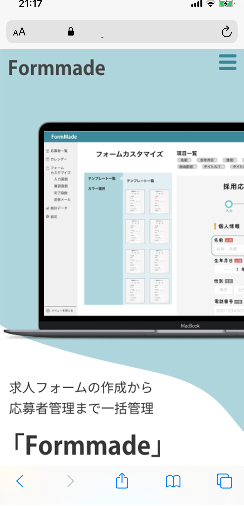
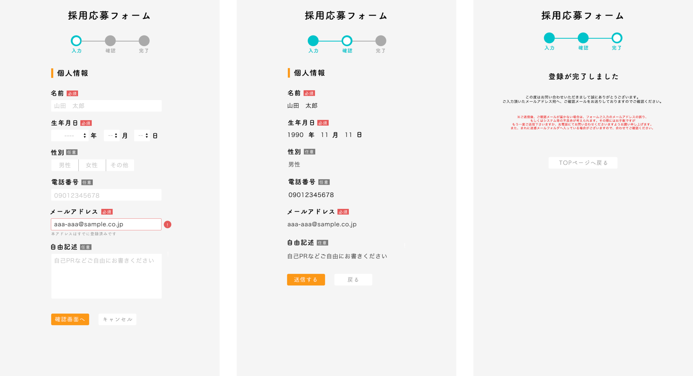
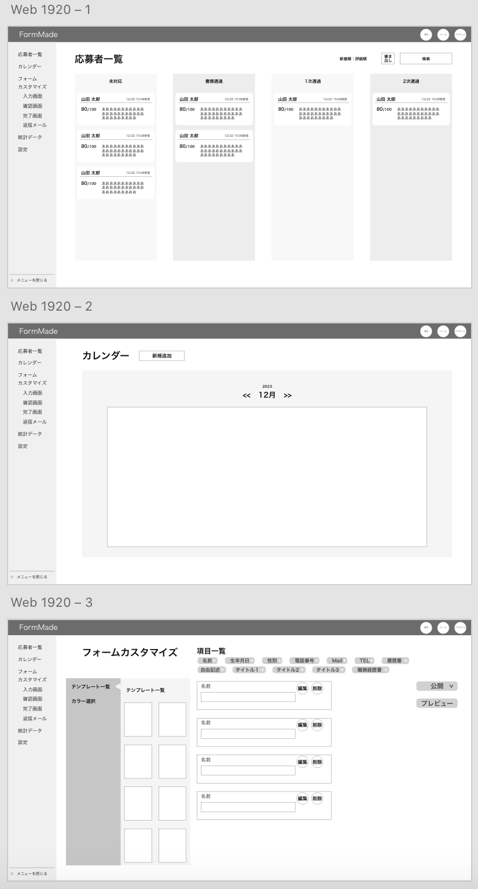
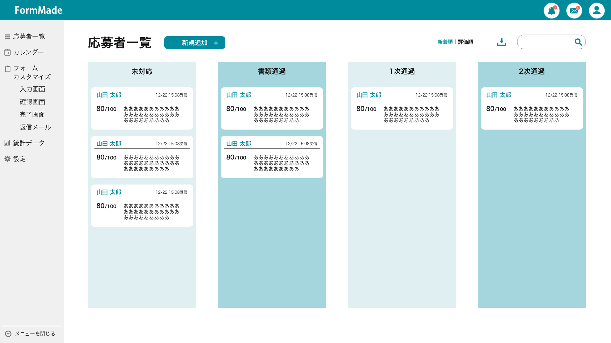
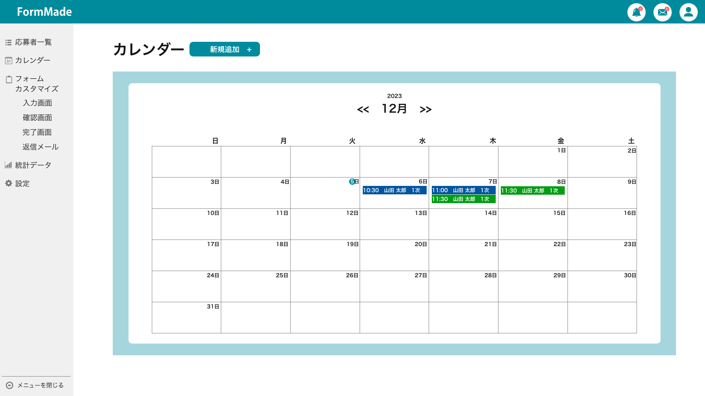
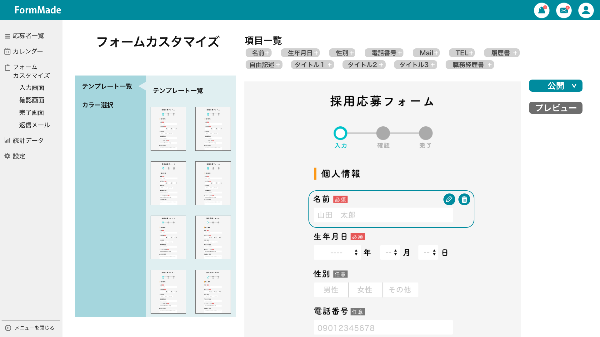
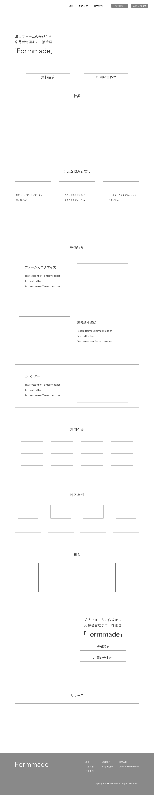
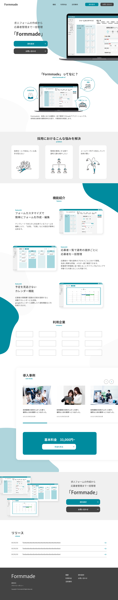
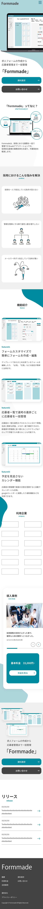

works
採用業務効率化webアプリ（架空）
採用業務効率化webアプリ「FormMade」



採用業務効率化webアプリ「FormMade」の要件定義からUI制作、リリースにかけてのLP制作をしました。
-
要件定義
ターゲット
各企業の採用担当者
概要
求人フォームの作成・応募者管理をアプリで簡素化することで業務の生産性を上げる
- フォーム作成
- 応募者データ管理
- 選考フロー管理
競合状況
「former」「forrm」DX化推進と採用改革による競合は増えている
業務要件
システム仕様：フォームで記入された内容を一覧に反映、選考の日程をカレンダーに反映
業務フロー
（ディレクター・UIデザイナー・エンジニア）
- 内部設計と外部設計
- UIデザイン
- システム
- セキュリティとプライバシー
- テスト
- 公開
- 保守運用・マーケターと共に改善
-
設計
機能
- フォームを作成し自分でカスタマイズできる（左側に項目一覧 → クリック・ドラッグで直感的に項目の追加・削除・並び替え）
- フォーム・確認画面・完了画面
- カレンダーで管理・通知
- 進捗ごとに振り返りができる一覧表示・日付順/評価順で並び替え（名前・評価・日付・簡単なメモをサムネイルとして表示）
- 検索機能（キーワード検索）
- 設定機能
- PDF・エクセルで書き出し
非機能
- セキュリティとプライバシー
- 保守運用
ペルソナ
- 36歳・男性・都会在住
- 生活雑貨販売会社の採用担当
- 事業拡大に伴い採用を強化したいと指示があった
- IT未経験 / 年収450万 / 10:00〜19:00勤務
- 採用フォームをまとめてくれるサイトで「FormMade」を発見。それまではメールで直接応募者とやり取りをして、エクセルで一覧にして管理していた。採用強化で追いつかなくなる懸念があり、簡単に管理できるようにしたい。





採用業務効率化webアプリ、LPサイト（架空）


目的：アプリを導入してもらうためにサイトで魅力を伝え、資料請求・お問い合わせへ誘導
ターゲット：採用業務を強化・効率化したい採用担当者・企業の30〜40代
- 「信頼感」を加えながら「丸みがある」デザイン
- カラーはブルーブラックをベースに使用
- 実際の使用画面を掲載することでイメージをしやすく
- 簡潔なアプリの概要とどんな問題を解決できるかを具体的な機能で示し、実際に導入している企業で信頼感を得る
- 資料請求・お問い合わせへの誘導が目的のため、近づきやすいイメージを崩しすぎないようタンクページの上部と下部のみに配置
point1
ひとつひとつ丸みのあるイラストを用いることで親近感を感じる
point2
ブルーブラックカラーを使用しているが、飛びすぎないよう程度に
point3
そっとのシャドウで立体感とサイト全体に統一感
